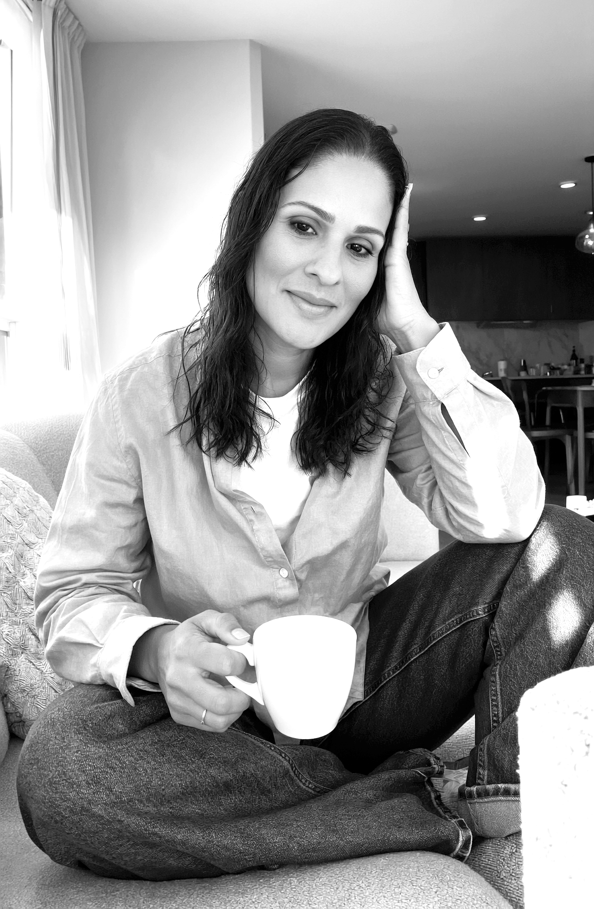

Project image pending
01
Building a distinctive visual world from strategy to expression.
Final case-study content will be added after selecting the strongest work and visual assets.

Senior Art Director
Brand Identity Designer
Creative Strategist
Creating brands that people remember.
I believe great design is more than aesthetics. It is strategy, communication and emotion working together to build brands people remember.
For more than twenty years, I have developed identities, campaigns and visual systems that help brands communicate with clarity and confidence. My approach combines strategic thinking, creative direction and careful execution across physical and digital media.
Final case-study content will be added after selecting the strongest work and visual assets.
Independent
Working directly with founders, creative studios and growing brands on brand identity, brand strategy, creative direction, social media and audiovisual production.
Semprenoi
Led the creative department across branding, advertising, digital production and integrated marketing for a growing portfolio of clients.
Semprenoi
Led the Art Department, overseeing creative concepts, visual identity systems, campaigns, editorial design, packaging, digital experiences and production.
Semprenoi
Shaped the studio’s visual language across campaigns, identities and brand systems.
Semprenoi
Created visual identities, advertising concepts, editorial layouts and print materials.
Colorama
Directed print and packaging work for regional consumer brands.
Colorama
Began a professional path focused on typography, print production and visual identity systems.
Visual systems built for recognition, clarity and long-term relevance.
Concept development, visual leadership and execution across campaigns.
Strategic communication aligned with audience needs and business goals.
Packaging systems that balance impact, coherence and usability.
Expressive layouts that transform content into visual narratives.
Responsive design and social systems that preserve brand coherence.
Image direction focused on message, mood and consistency.
Creative development for motion, campaigns and branded content.
Karen Salas
Budapest, Hungary